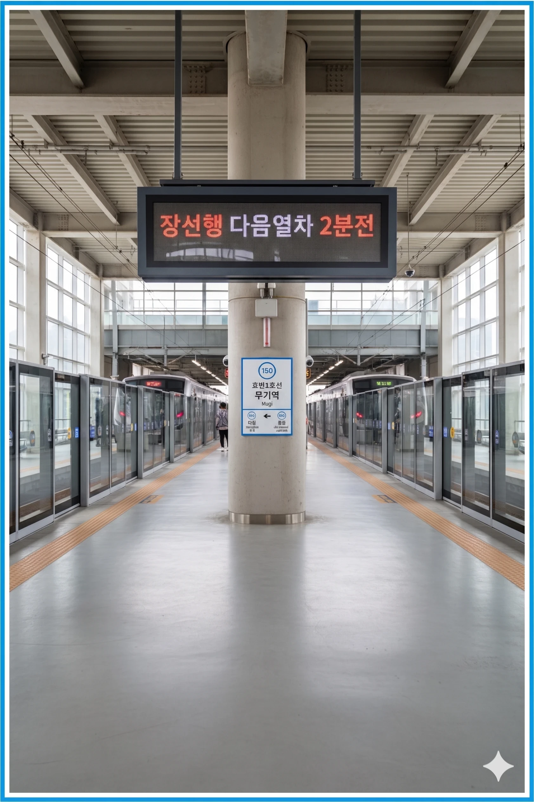

효빈 도시철도 1호선 150번 역이다. 덕빈북도 약산시 장곡읍 무기리 1456에 소재한다. 2024년 개통한 신설 역이다.
지상 1층 규모의 역사다. 역명인 무기(武基)는 과거 군사 훈련 시 무기를 보관하던 터였다는 유래가 있다.
| 번호 | 주요 시설 및 방향 | 비고 |
|---|---|---|
| 1 | 무기마을 회관 | |
| 2 | 무기시장 |
| 연도 | 일평균 이용객 | 비고 |
|---|---|---|
| 2024년 | 5,001명 |

| 마현 ↑ | ||||
| ㅣ | 하행 승강장 | ㅣ | 상행 승강장 | ㅣ |
| ↓ 장선 | ||||
| 구분 | 정류소명 | 노선 번호 |
|---|---|---|
| 약산 시내 | 무기역 앞 | 약산 150, 약산 155, 장곡순환 02 |
| 약산(건너편) | 무기역 건너편 | 약산 150-1, 약산 155-1, 장곡순환 02-1 |